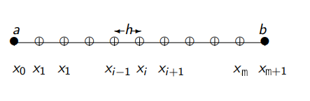

28) Midterm Solution#
We want to solve the time-independent (steady state) Poisson’s problem

on a 1D domain \([a,b] = [-1,1]\) discretized with \(m+2\) equispaced grid points (but we’re going to solve for the unknown only, i.e., for the \(m\) interior grid points), with right-hand side forcing function \(f(x) =\pi^2 \sin(\pi x)\), and (homogeneous) Dirichelet boundary conditions:
which has the exact solution \(u(x)=\sin(\pi x)\).
I will outline here the process for generic, non-homegenous Dirichlet boundary conditions:
and you can easily see how these apply for homegenous Dirichlet boundary conditions, when \(\alpha = \beta = 0\).
For the interior grid points, for indices \(i=1, \dots, m\), we have:
We substitute the value given by the boundary condition: \({u_0} = \alpha\). Hence, the first equation to be solved becomes:
For the last interior grid point, we have:
Again, we substitute the value given by the boundary condition: \(u_{m+1} = \beta\). Hence, the last equation to be solved becomes:
For non-homegenous Dirichlet boundary conditions:
For homegenous Dirichlet boundary conditions,with \(\alpha = \beta = 0\):
Julia Implementation of Stationary Iterative Solvers: Jacobi, Gauss-Seidel and SOR#
using LinearAlgebra
using IterativeSolvers
using Plots
function my_jacobi(A,b,x0,tol,maxiter=100)
(m,n) = size(A)
x = deepcopy(x0)
iter = 0
residual_norm = tol + 1
while iter < maxiter
iter += 1
residual = b-A*x
for i=1:m
residual[i] /= A[i,i]
end
x += residual
residual_norm = norm(b-A*x)
if residual_norm <= tol
return (x, iter, residual_norm, false)
end
end
return (x, iter, residual_norm, true)
end
function my_gauss_seidel(A,b,x0,tol,maxiter=100)
(m,n) = size(A)
x = deepcopy(x0)
iter = 0
residual = zeros(m, 1)
residual_norm = tol + 1
while iter < maxiter
iter += 1
for i = 1:m
residual[i] = b[i]
for j = 1:n
residual[i] -= A[i,j]*x[j]
end
residual[i] /= A[i,i]
x[i] += residual[i]
end
residual_norm = norm(b-A*x)
if residual_norm <= tol
return (x, iter, residual_norm, false)
end
end
return (x, iter, residual_norm, true)
end
function my_sor(A,b,x0,tol,maxiter=100,ω=1)
# Note: with ω=1, SOR is the same as Gauss-Seidel!
(m,n) = size(A)
x = deepcopy(x0)
iter = 0
residual = zeros(m, 1)
residual_norm = tol + 1
while iter < maxiter
iter += 1
for i = 1:m
residual[i] = ω * b[i]
for j = 1:n
residual[i] -= A[i,j] * ω * x[j]
end
residual[i] /= A[i,i]
x[i] += residual[i]
end
residual_norm = norm(b-A*x)
if residual_norm <= tol
return (x, iter, residual_norm, false)
end
end
return (x, iter, residual_norm, true)
end
# domain parameters
a = -1.0
b = 1.0
l = abs(b-a)
# sequences of tuples and vectors needed to run the executions for all m's in a loop
m_seq = (10) .^(2,3,4)
A_seq = Matrix{Float64}[]
rhs_seq = Vector{Float64}[]
x0_seq = Vector{Float64}[]
actual_sol_seq = Vector{Float64}[]
Δx_seq = l ./(m_seq .+ 1)
u_seq_left_division = Vector{Float64}[]
u_seq_my_jacobi = Vector{Float64}[]
u_seq_IS_jacobi = Vector{Float64}[]
u_seq_my_gauss_seidel = Vector{Float64}[]
u_seq_IS_gauss_seidel = Vector{Float64}[]
u_seq_my_sor = Vector{Float64}[]
u_seq_IS_sor = Vector{Float64}[]
tol = 1e-5
maxiter = 100
ω = 1
# initialize interior grid points variables
for (k, m) in enumerate(m_seq)
push!(A_seq, diagm( -1=>fill(-1,m-1), 0=>fill(2,m), 1=>fill(-1,m-1)))
push!(rhs_seq, [(pi^2*sin(pi*x))*Δx_seq[k]^2 for x in a+Δx_seq[k]:Δx_seq[k]:b-Δx_seq[k]])
push!(x0_seq, zeros(m))
push!(actual_sol_seq, [sin(pi*x) for x in a+Δx_seq[k]:Δx_seq[k]:b-Δx_seq[k]])
push!(u_seq_left_division, zeros(m))
push!(u_seq_my_jacobi, zeros(m))
push!(u_seq_IS_jacobi, zeros(m))
push!(u_seq_my_gauss_seidel, zeros(m))
push!(u_seq_IS_gauss_seidel, zeros(m))
push!(u_seq_my_sor, zeros(m))
push!(u_seq_IS_sor, zeros(m))
end
# call the functions and fill in the solution vectors
# backslash operator
for (k, m) in enumerate(m_seq)
println("for m = $m")
# for the first value of m, we time twice, since for the first invocation of any function, Julia includes precompilation times. For all other m's, this is not needed, because the function is already precompiled.
if k == 1
println("first execution of left-division operator (includes precompilation times)")
@time u_seq_left_division[k] = A_seq[k] \ rhs_seq[k]
println("second execution of left-division operator")
@time u_seq_left_division[k] = A_seq[k] \ rhs_seq[k]
else
println("execution of left-division operator")
@time u_seq_left_division[k] = A_seq[k] \ rhs_seq[k]
end
end
# call my_jacobi and compare with backslash operator solution
for (k, m) in enumerate(m_seq)
println("for m = $m")
# for the first value of m, we time twice, since for the first invocation of any function, Julia includes precompilation times. For all other m's, this is not needed, because the function is already precompiled.
if k == 1
println("first execution of my_jacobi (includes precompilation times)")
@time (u_seq_my_jacobi[k], iter, residual_norm, flag) = my_jacobi(A_seq[k], rhs_seq[k], x0_seq[k], tol, maxiter)
println("second execution of my_jacobi")
@time (u_seq_my_jacobi[k], iter, residual_norm, flag) = my_jacobi(A_seq[k], rhs_seq[k], x0_seq[k], tol, maxiter)
plot(a:Δx_seq[k]:b, u_seq_left_division[k])
plot!(a:Δx_seq[k]:b, u_seq_my_jacobi[k])
println("first execution of IS jacobi! (includes precompilation times)")
@time jacobi!(u_seq_IS_jacobi[k], A_seq[k], rhs_seq[k]; maxiter)
println("second execution of IS jacobi!")
@time jacobi!(u_seq_IS_jacobi[k], A_seq[k], rhs_seq[k]; maxiter)
else
println("execution of my_jacobi")
@time (u_seq_my_jacobi[k], iter, residual_norm, flag) = my_jacobi(A_seq[k], rhs_seq[k], x0_seq[k], tol, maxiter)
println("execution of IS jacobi!")
@time jacobi!(u_seq_IS_jacobi[k], A_seq[k], rhs_seq[k]; maxiter)
end
# compute errors
my_jacobi_left_div_error = norm(u_seq_my_jacobi[k] - u_seq_left_division[k])
my_jacobi_actual_sol_error = norm(u_seq_my_jacobi[k] - actual_sol_seq[k])
my_jacobi_IS_error = norm(u_seq_my_jacobi[k] - u_seq_IS_jacobi[k])
# print errors
@info "norm(my_jacobi - backslash)" my_jacobi_left_div_error
@info "norm(my_jacobi - actual_sol)" my_jacobi_actual_sol_error
@info "norm(my_jacobi - IS_jacobi)" my_jacobi_IS_error
end
# call my_gauss_seidel and compare with backslash operator solution
for (k, m) in enumerate(m_seq)
println("for m = $m")
# for the first value of m, we time twice, since for the first invocation of any function, Julia includes precompilation times. For all other m's, this is not needed, because the function is already precompiled.
if k == 1
println("first execution of my_gauss_seidel (includes precompilation times)")
@time (u_seq_my_gauss_seidel[k], iter, residual_norm, flag) = my_gauss_seidel(A_seq[k], rhs_seq[k], x0_seq[k], tol, maxiter)
println("second execution of my_gauss_seidel")
@time (u_seq_my_gauss_seidel[k], iter, residual_norm, flag) = my_gauss_seidel(A_seq[k], rhs_seq[k], x0_seq[k], tol, maxiter)
println("first execution of IS gauss_seidel! (includes precompilation times)")
@time gauss_seidel!(u_seq_IS_gauss_seidel[k], A_seq[k], rhs_seq[k]; maxiter)
println("second execution of IS gauss_seidel!")
@time gauss_seidel!(u_seq_IS_gauss_seidel[k], A_seq[k], rhs_seq[k]; maxiter)
else
println("execution of my_gauss_seidel")
@time (u_seq_my_gauss_seidel[k], iter, residual_norm, flag) = my_gauss_seidel(A_seq[k], rhs_seq[k], x0_seq[k], tol, maxiter)
println("execution of IS gauss_seidel!")
@time gauss_seidel!(u_seq_IS_gauss_seidel[k], A_seq[k], rhs_seq[k]; maxiter)
end
# compute errors
my_gauss_seidel_left_div_error = norm(u_seq_my_gauss_seidel[k] - u_seq_left_division[k])
my_gauss_seidel_actual_sol_error = norm(u_seq_my_gauss_seidel[k] - actual_sol_seq[k])
my_gauss_seidel_IS_error = norm(u_seq_my_gauss_seidel[k] - u_seq_IS_gauss_seidel[k])
# print errors
@info "norm(my_gauss_seidel - backslash)" my_gauss_seidel_left_div_error
@info "norm(my_gauss_seidel - actual_sol)" my_gauss_seidel_actual_sol_error
@info "norm(my_gauss_seidel - IS_gauss_seidel)" my_gauss_seidel_IS_error
end
# call my_sor and compare with backslash operator solution
for (k, m) in enumerate(m_seq)
println("for m = $m")
# for the first value of m, we time twice, since for the first invocation of any function, Julia includes precompilation times. For all other m's, this is not needed, because the function is already precompiled.
if k == 1
println("first execution of my_sor (includes precompilation times)")
@time (u_seq_my_sor[k], iter, residual_norm, flag) = my_sor(A_seq[k], rhs_seq[k], x0_seq[k], tol, maxiter, ω)
println("second execution of my_sor")
@time (u_seq_my_sor[k], iter, residual_norm, flag) = my_sor(A_seq[k], rhs_seq[k], x0_seq[k], tol, maxiter, ω)
println("first execution of IS sor! (includes precompilation times)")
@time sor!(u_seq_IS_sor[k], A_seq[k], rhs_seq[k], ω; maxiter)
println("second execution of IS sor!")
@time sor!(u_seq_IS_sor[k], A_seq[k], rhs_seq[k], ω; maxiter)
else
println("execution of my_sor")
@time (u_seq_my_sor[k], iter, residual_norm, flag) = my_sor(A_seq[k], rhs_seq[k], x0_seq[k], tol, maxiter, ω)
println("execution of IS sor!")
@time sor!(u_seq_IS_sor[k], A_seq[k], rhs_seq[k], ω; maxiter)
end
# compute errors
my_sor_left_div_error = norm(u_seq_my_sor[k] - u_seq_left_division[k])
my_sor_actual_sol_error = norm(u_seq_my_sor[k] - actual_sol_seq[k])
my_sor_IS_error = norm(u_seq_my_sor[k] - u_seq_IS_sor[k])
# print errors
@info "norm(my_sor - backslash)" my_sor_left_div_error
@info "norm(my_sor - actual_sol)" my_sor_actual_sol_error
@info "norm(my_sor - IS_sor)" my_sor_IS_error
end